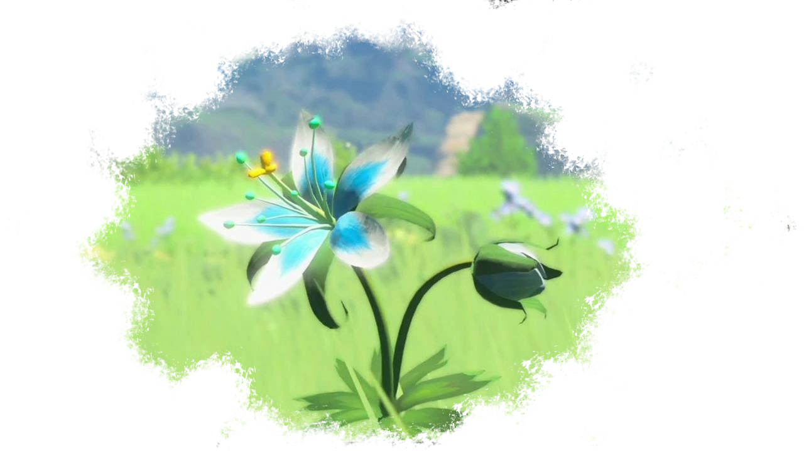

Bienvenue
Ce site traite de Zelda: Breath of the Wild,jeu déjà mythique créé par Nintendo. Nous relaterons ici des informations générales pour mieux appréhender cet opus si vaste et complet. Que ce soit de l'histoire principale, des personnages ou du lore, le but de ce site est de parler d'un jeu qui fait rêver des millions de joueurs afin de -peut-être- vous apprendre des choses!
Evidemment, en venant par-ici, vous vous exposez au très vilain SPOIL. Vous ne pourrez pas dire que vous n'aviez pas été prévenu! J'espère que ceux qui ne connaissent pas le jeu ou même la licence auront envie d'en apprendre plus, et peut-être même se lancer dans cette aventure unique.
C'est un site de fan créé pour des fans ou des fans en devenir, et l'unique volonté est de donner envie de parcourir Hyrule et de découvrir ses secrets, mais surtout ses merveilles.
Je vous souhaite une agréable visite sur le site.
